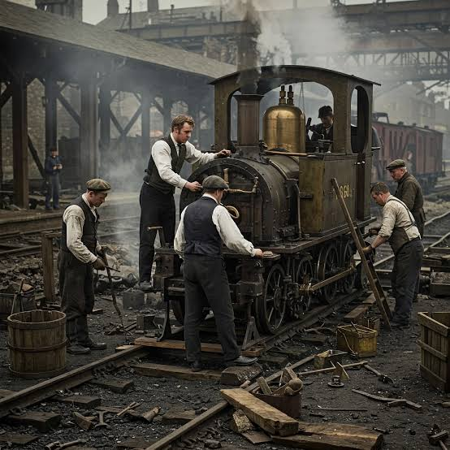
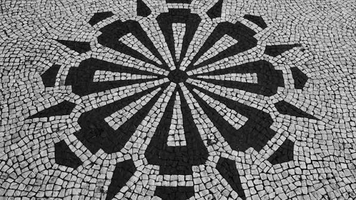
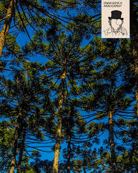

O fenômeno dos Barões da Erva-Mate.
O ciclo ocorreu entre 1850 e 1930 no Paraná, impulsionado por engenhos industriais a vapor e pelo transporte de trem rumo aos portos, transformando a economia e a infraestrutura do estado.

contexto historico
Identidade Regional (Paranismo): O dinheiro do mate financiou o Movimento Paranista. Artistas passaram a usar a erva-mate e a araucária como símbolos de orgulho nas artes, calçadas e monumentos. Mistura de Povos: O ciclo do mate uniu a herança dos indígenas (conhecimento da planta), o trabalho dos caboclos (colheita/transporte) e a visão dos europeus (indústria/exportação), criando uma identidade social única. Patrocínio das Artes: Os barões atuaram como patrocinadores (mecenas), financiando a construção de teatros, escolas e clubes, o que trouxe vida urbana e cultural para as cidades. Tradição Viva: A indústria fortalecida por eles ajudou a consolidar o hábito de tomar chimarrão e tereré, que se tornou o maior símbolo de hospitalidade e convívio social da região.

importancia cultural
Criação da Identidade Regional (Paranismo): O financiamento do mate gerou um movimento artístico que transformou o pinheiro (araucária) e a folha do mate nos maiores símbolos do Paraná, presentes em quadros, fachadas e nas calçadas de petit-pavé. Sincretismo e Encontro de Culturas: Uniu a herança e o conhecimento indígena (uso da planta), a força de trabalho cabocla (colheita/transporte) e a infraestrutura europeia (indústria/exportação). Mecenato e Urbanidade: Os barões patrocinaram as artes, a música e a construção de teatros, bibliotecas e praças, transformando cidades simples em polos culturais. Patrimônio Vivo: Fortaleceu o hábito de tomar chimarrão e tereré, consolidando a "roda de mate" como o principal símbolo de hospitalidade e convivência no Sul.

Curiosidades
Curiosidade 1
. Com a fortuna da erva-mate, os barões ergueram palacetes ecléticos inspirados na Europa, desenharam os primeiros bairros nobres de Curitiba e trouxeram móveis, portais e até mausoléus de pedra portuguesa diretamente do Velho Mundo.
Curiosidade 2
Importação de materiais e projetos: Os palacetes usavam móveis, decorações e até pedras vindas diretamente da Europa para refletir o padrão de luxo do Velho Mundo.] O Palacete dos Leões: Construído em 1902 para a família fundadora da Mate Leão, teve o projeto assinado por Cândido de Abreu, que depois virou prefeito de Curitiba. O Solar do Barão: Residência do maior produtor de erva-mate do mundo, o Barão do Serro Azul, exibe arquitetura eclética e hoje funciona como um vibrante centro cultural. As mansões eram erguidas em grandes áreas verdes no estilo de chácaras, dando origem aos primeiros bairros planejados fora do núcleo central de Curitiba.